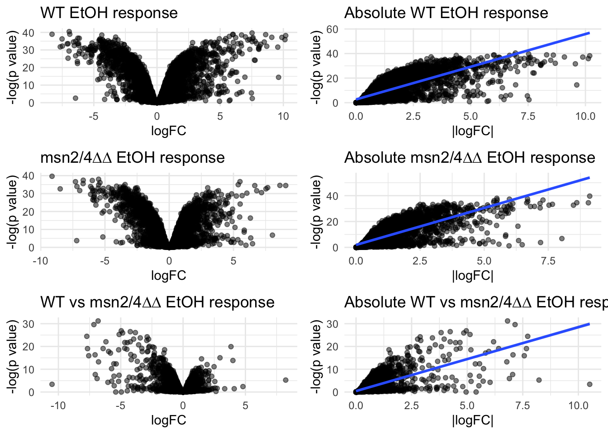

Code
# preform basic calculations
2+2[1] 4Code
# print a statement usint the print() function
print("R code in a .qmd code chunk works just like a script")[1] "R code in a .qmd code chunk works just like a script"This activity is intended to familiarize you with using R and RStudio to analyze genomic data
At the end of this exercise, you should be able to:
This is a Quarto document. It uses a simple formatting syntax called markdown for authoring HTML, PDF, and MS Word documents. For more details on using Quarto, see https://quarto.org.
Think of this type of document as an electronic lab notebook for your data analysis.
When you click the knit button, a document will be generated that includes both content as well as the output of code chunks within the document. You can embed an R code chunk like this:
# preform basic calculations
2+2[1] 4# print a statement usint the print() function
print("R code in a .qmd code chunk works just like a script")[1] "R code in a .qmd code chunk works just like a script"Packages are collections of functions that extend the capabilities of R. Packages have to be downloaded and installed before they can be used.
We can install and load packages using the following commands.
# Install a package
install.packages("pak")# Load the package
library(pak)Warning: package 'pak' was built under R version 4.4.3We can load a package so we can use any functions it contains. Packages only need to be installed once, but they need to be loaded every time you start a new R session.
The pak package is a package management tool that makes it easier to install and load packages. The pak function from the pak package is a more modern way to install packages if they aren’t already installed and up to date.
We will use some packages below and later in this course, so let’s make sure you have them installed now.
# install readr and dplyr packages
pak("readr", "dplyr")R is a powerful tool for analyzing genomic data. Let’s download a genomic data file from GitHub for us to work with today.
Now, we can download the data file and load it into R.
# access-data-01
# assign url to a variable
DE_data_url <- "https://raw.githubusercontent.com/clstacy/GenomicAnalysis/main/Data/Msn24_EtOH/DE_genes_Msn24_EtOH.txt"One way we will load the file is using a GUI built into RStudio. - Copy the url above (without the quotation marks). - Click on the “Import Dataset” button in the Environment tab of RStudio. - Select “From Text (readr)” - Paste the url into the “File” field at the top of the window. - Click “update” for the file to be retrieved. - Choose “Tab” as the delimiter. - If things look good in the preview, click “Import” and the data will be loaded into RStudio.
Another way to load the data is using code, which is more reproducible. This function reads a tab-separated file into R.
# load the readr package
library(readr)
# load in the file and save it as an object
DE_results_msn24_EtOH = read_tsv(DE_data_url)Rows: 5756 Columns: 18
── Column specification ────────────────────────────────────────────────────────
Delimiter: "\t"
chr (3): gene_id, common_name, annotation
dbl (15): logFC_YPS606_WT_etoh_response, pvalue_YPS606_WT_etoh_response, fdr...
ℹ Use `spec()` to retrieve the full column specification for this data.
ℹ Specify the column types or set `show_col_types = FALSE` to quiet this message.Note that this function uses the package readr (a part of the tidyverse package we loaded above). If you don’t have that package (1) installed and (2) loaded into your script, it won’t work.
There are many rows and columns. We can use the glimpse() function from the dplyr package to get a better idea of what the data looks like.
# load a very common processing package
library(dplyr)
Attaching package: 'dplyr'The following objects are masked from 'package:stats':
filter, lagThe following objects are masked from 'package:base':
intersect, setdiff, setequal, union# glimpse() function shows how the data is structured
glimpse(DE_results_msn24_EtOH)Rows: 5,756
Columns: 18
$ gene_id <chr> "YMR105C", "YML100W", "YER053C", "…
$ common_name <chr> "PGM2", "TSL1", "PIC2", "NCE102", …
$ annotation <chr> "Phosphoglucomutase", "Large subun…
$ logFC_YPS606_WT_etoh_response <dbl> 7.5999973, 7.7618280, 6.6940024, 0…
$ pvalue_YPS606_WT_etoh_response <dbl> 9.40e-38, 1.04e-35, 3.03e-39, 2.17…
$ fdr_YPS606_WT_EtOH_response <dbl> 3.26e-35, 1.54e-33, 2.07e-36, 4.57…
$ logFC_YPS606_msn24dd_EtOH_response <dbl> 0.78481798, 0.60949852, 1.73591634…
$ pvalue_YPS606_msn24dd_EtOH_response <dbl> 3.430000e-06, 8.401730e-04, 4.6400…
$ fdr_YPS606_msn24dd_EtOH_response <dbl> 7.420000e-06, 1.398507e-03, 2.8600…
$ logFC_WT.vs.msn24dd_EtOH_response <dbl> -6.815179, -7.152329, -4.958086, -…
$ pvalue_WT.vs.msn24dd_EtOH_response <dbl> 6.34e-32, 2.53e-30, 1.35e-27, 3.23…
$ fdr_WT.vs.msn24dd_EtOH_response <dbl> 3.65e-28, 7.28e-27, 2.59e-24, 4.65…
$ logFC_WT.vs.msn24dd_unstressed <dbl> -0.144061475, -0.365016862, -0.126…
$ pvalue_WT.vs.msn24dd_unstressed <dbl> 0.350436027, 0.041423492, 0.425528…
$ fdr_WT.vs.msn24dd_unstressed <dbl> 0.998531082, 0.998531082, 0.998531…
$ logFC_WT.vs.msn24dd_EtOH_absolute <dbl> -6.959241, -7.517346, -5.084564, -…
$ pvalue_WT.vs.msn24dd_EtOH_absolute <dbl> 8.55e-37, 2.04e-35, 3.06e-36, 7.93…
$ fdr_WT.vs.msn24dd_EtOH_absolute <dbl> 1.64e-33, 1.96e-32, 3.52e-33, 2.85…We see in the output there are 5756 rows and 18 columns in the data. The same information should be available in the environment panel of RStudio
If we want to take a closer look at the data, we have a few options. To see just the first few lines we can run the following command:
head(DE_results_msn24_EtOH)# A tibble: 6 × 18
gene_id common_name annotation logFC_YPS606_WT_etoh…¹ pvalue_YPS606_WT_eto…²
<chr> <chr> <chr> <dbl> <dbl>
1 YMR105C PGM2 Phosphogluc… 7.60 9.40e-38
2 YML100W TSL1 Large subun… 7.76 1.04e-35
3 YER053C PIC2 Mitochondri… 6.69 3.03e-39
4 YPR149W NCE102 Protein inv… 0.714 2.17e- 7
5 YKL035W UGP1 UDP-glucose… 4.42 7.55e-34
6 YLR258W GSY2 Glycogen sy… 7.52 2.20e-40
# ℹ abbreviated names: ¹logFC_YPS606_WT_etoh_response,
# ²pvalue_YPS606_WT_etoh_response
# ℹ 13 more variables: fdr_YPS606_WT_EtOH_response <dbl>,
# logFC_YPS606_msn24dd_EtOH_response <dbl>,
# pvalue_YPS606_msn24dd_EtOH_response <dbl>,
# fdr_YPS606_msn24dd_EtOH_response <dbl>,
# logFC_WT.vs.msn24dd_EtOH_response <dbl>, …This can be difficult to look at. For looking at data similar to an Excel file, RStudio allows this by clicking on the name of the data.frame in the top right corner of the IDE. We can also view a file by typing View(filename). To open the data in a new window, click the “pop out” button next to “filter” just above the opened dataset.
This dataset includes the log fold changes of gene expression in an experiment testing the ethanol stress response for the YPS606 strain of S. cerevisiae and an msn2/4ΔΔ mutant. There are also additional columns of metadata about each gene. In later classes, we will cover the details included, but we can already start answering questions.
Using RStudio, answer the following questions:
length(unique(DE_results_msn24_EtOH$gene_id))[1] 5756There are 5756 unique values of gene_id in the DataFrame indicating that there are 5756 genes included in the study.
DE_results_msn24_EtOH %>%
arrange(desc(logFC_YPS606_msn24dd_EtOH_response)) %>%
head(1) %>%
knitr::kable()| gene_id | common_name | annotation | logFC_YPS606_WT_etoh_response | pvalue_YPS606_WT_etoh_response | fdr_YPS606_WT_EtOH_response | logFC_YPS606_msn24dd_EtOH_response | pvalue_YPS606_msn24dd_EtOH_response | fdr_YPS606_msn24dd_EtOH_response | logFC_WT.vs.msn24dd_EtOH_response | pvalue_WT.vs.msn24dd_EtOH_response | fdr_WT.vs.msn24dd_EtOH_response | logFC_WT.vs.msn24dd_unstressed | pvalue_WT.vs.msn24dd_unstressed | fdr_WT.vs.msn24dd_unstressed | logFC_WT.vs.msn24dd_EtOH_absolute | pvalue_WT.vs.msn24dd_EtOH_absolute | fdr_WT.vs.msn24dd_EtOH_absolute |
|---|---|---|---|---|---|---|---|---|---|---|---|---|---|---|---|---|---|
| YJL052W | TDH1 | Glyceraldehyde-3-phosphate dehydrogenase (GAPDH), isozyme 1 | 10.12554 | 0 | 0 | 9.064412 | 0 | 0 | -1.06113 | 0.0001588 | 0.0013867 | -0.1544915 | 0.4323923 | 0.9985311 | -1.215622 | 0 | 1e-07 |
The TDH1 gene displays the highest value of logFC_YPS606_msn24dd_EtOH_response, indicating it shows the greatest positive (upregulated) difference in the msn2/4ΔΔ mutant vs WT EtOH response.
DE_results_msn24_EtOH %>%
filter(fdr_WT.vs.msn24dd_unstressed < 0.01,
grepl("HSP", common_name, ignore.case = TRUE)) %>%
knitr::kable()| gene_id | common_name | annotation | logFC_YPS606_WT_etoh_response | pvalue_YPS606_WT_etoh_response | fdr_YPS606_WT_EtOH_response | logFC_YPS606_msn24dd_EtOH_response | pvalue_YPS606_msn24dd_EtOH_response | fdr_YPS606_msn24dd_EtOH_response | logFC_WT.vs.msn24dd_EtOH_response | pvalue_WT.vs.msn24dd_EtOH_response | fdr_WT.vs.msn24dd_EtOH_response | logFC_WT.vs.msn24dd_unstressed | pvalue_WT.vs.msn24dd_unstressed | fdr_WT.vs.msn24dd_unstressed | logFC_WT.vs.msn24dd_EtOH_absolute | pvalue_WT.vs.msn24dd_EtOH_absolute | fdr_WT.vs.msn24dd_EtOH_absolute |
|---|---|---|---|---|---|---|---|---|---|---|---|---|---|---|---|---|---|
| YDR258C | HSP78 | Oligomeric mitochondrial matrix chaperone | 5.104206 | 0 | 0 | 0.6272183 | 0.0004537 | 0.0007833 | -4.476987 | 0 | 0 | 1.084925 | 5e-07 | 0.0005056 | -3.392062 | 0 | 0 |
| YPL240C | HSP82 | Hsp90 chaperone | 4.742075 | 0 | 0 | 2.3310084 | 0.0000000 | 0.0000000 | -2.411066 | 0 | 0 | 1.085123 | 1e-07 | 0.0001037 | -1.325943 | 0 | 0 |
There are two HSP genes differentially expressed in unstressed conditions for the mutant?
library(ggplot2)Warning: package 'ggplot2' was built under R version 4.4.3library(cowplot)
set_theme(theme_minimal())
a1 <- ggplot(
data = DE_results_msn24_EtOH, aes(x = logFC_YPS606_msn24dd_EtOH_response,
y = -log10(pvalue_YPS606_msn24dd_EtOH_response))) +
geom_point(alpha = 0.5) +
labs(title = "msn2/4∆∆ EtOH response",
x = "logFC",
y = "-log(p value)")
a2 <- ggplot(
data = DE_results_msn24_EtOH, aes(x = abs(logFC_YPS606_msn24dd_EtOH_response),
y = -log10(pvalue_YPS606_msn24dd_EtOH_response))) +
geom_point(alpha = 0.5) +
geom_smooth(method = "lm") +
labs(title = "Absolute msn2/4∆∆ EtOH response",
x = "|logFC|",
y = "-log(p value)")
b1 <- ggplot(
data = DE_results_msn24_EtOH, aes(x = logFC_YPS606_WT_etoh_response,
y = -log10(pvalue_YPS606_WT_etoh_response))) +
geom_point(alpha = 0.5) +
labs(title = "WT EtOH response",
x = "logFC",
y = "-log(p value)")
b2 <- ggplot(
data = DE_results_msn24_EtOH, aes(x = abs(logFC_YPS606_WT_etoh_response),
y = -log10(pvalue_YPS606_WT_etoh_response))) +
geom_point(alpha = 0.5) +
geom_smooth(method = "lm") +
labs(title = "Absolute WT EtOH response",
x = "|logFC|",
y = "-log(p value)")
c1 <- ggplot(
data = DE_results_msn24_EtOH, aes(x = logFC_WT.vs.msn24dd_EtOH_response,
y = -log10(pvalue_WT.vs.msn24dd_EtOH_response))) +
geom_point(alpha = 0.5) +
labs(title = "WT vs msn2/4∆∆ EtOH response",
x = "logFC",
y = "-log(p value)")
c2 <- ggplot(
data = DE_results_msn24_EtOH, aes(x = abs(logFC_WT.vs.msn24dd_EtOH_response),
y = -log10(pvalue_WT.vs.msn24dd_EtOH_response))) +
geom_point(alpha = 0.5) +
geom_smooth(method = "lm") +
labs(title = "Absolute WT vs msn2/4∆∆ EtOH response",
x = "|logFC|",
y = "-log(p value)")
plot_grid(b1, b2, a1, a2, c1, c2, ncol = 2, nrow = 3)`geom_smooth()` using formula = 'y ~ x'
`geom_smooth()` using formula = 'y ~ x'
`geom_smooth()` using formula = 'y ~ x'
Log fold change and p-value seem to be generally positively correlated, although not perfectly. These graphs indicate that higher log-fold changes are typically associated with higher p-values, especially at lower values, though that relationship tends to become looser as either number gets higher.
DE_results_msn24_EtOH %>%
filter(grepl("phosphoglucomutase", annotation, ignore.case = TRUE)) %>%
arrange(common_name) %>%
select(common_name,
logFC_YPS606_WT_etoh_response,
logFC_YPS606_msn24dd_EtOH_response,
logFC_WT.vs.msn24dd_EtOH_response) %>%
knitr::kable()| common_name | logFC_YPS606_WT_etoh_response | logFC_YPS606_msn24dd_EtOH_response | logFC_WT.vs.msn24dd_EtOH_response |
|---|---|---|---|
| PGM1 | -0.9355309 | -1.181474 | -0.2459435 |
| PGM2 | 7.5999973 | 0.784818 | -6.8151793 |
This suggests that the mutation is responsible for an altered stress response, especially if the mutant displays differential fitness compared to the WT when exposed to ethanol.
Render this file into a pdf or html file once you’re finished. If an error occurs, that will let you know there is any issue that needs to be resolved.
System information for reproducibility:
pander::pander(sessionInfo())R version 4.4.0 (2024-04-24)
Platform: aarch64-apple-darwin20
locale: en_US.UTF-8||en_US.UTF-8||en_US.UTF-8||C||en_US.UTF-8||en_US.UTF-8
attached base packages: stats, graphics, grDevices, utils, datasets, methods and base
other attached packages: cowplot(v.1.1.3), ggplot2(v.4.0.1), dplyr(v.1.1.4), readr(v.2.1.5) and pak(v.0.9.2)
loaded via a namespace (and not attached): Matrix(v.1.7-0), bit(v.4.5.0.1), gtable(v.0.3.6), jsonlite(v.1.8.8), compiler(v.4.4.0), crayon(v.1.5.3), Rcpp(v.1.0.14), tidyselect(v.1.2.1), parallel(v.4.4.0), splines(v.4.4.0), scales(v.1.4.0), yaml(v.2.3.10), fastmap(v.1.2.0), lattice(v.0.22-6), R6(v.2.5.1), labeling(v.0.4.3), generics(v.0.1.3), curl(v.6.2.0), knitr(v.1.48), htmlwidgets(v.1.6.4), tibble(v.3.2.1), pander(v.0.6.6), pillar(v.1.10.1), RColorBrewer(v.1.1-3), tzdb(v.0.4.0), rlang(v.1.1.4), utf8(v.1.2.4), xfun(v.0.47), S7(v.0.2.1), bit64(v.4.6.0-1), cli(v.3.6.3), mgcv(v.1.9-1), withr(v.3.0.2), magrittr(v.2.0.3), digest(v.0.6.37), grid(v.4.4.0), vroom(v.1.6.5), rstudioapi(v.0.17.1), hms(v.1.1.3), nlme(v.3.1-164), lifecycle(v.1.0.4), vctrs(v.0.6.5), evaluate(v.0.24.0), glue(v.1.7.0), farver(v.2.1.2), rmarkdown(v.2.28), tools(v.4.4.0), pkgconfig(v.2.0.3) and htmltools(v.0.5.8.1)